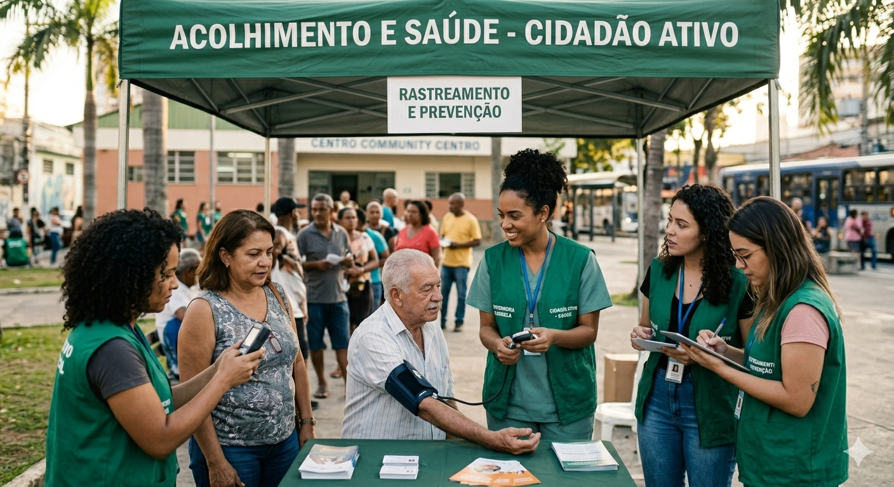

A saúde pública vai muito além do atendimento médico individual. Ela engloba um conjunto de medidas coletivas focadas em proteger, promover e recuperar a saúde da população por meio de políticas do governo, saneamento básico e controle de doenças.

Longas Filas de espera e unidades de saúde sobrecarregadas, dificultando o atendimento.
Desabastecimento de medicamentos essenciais e de uso contínuo nas farmácias populares e postos de saúde.
Áreas com acúmulo de água parada que favorecem a proliferação do mosquito transmissor da doença.
Descarte inadequado de resíduos e entulhos nos arredores de unidades médicas, gerando riscos de contaminação.
Falta de acolhimento, triagem ineficiente e canais de comunicação falhos entre o cidadão e a gestão de saúde.